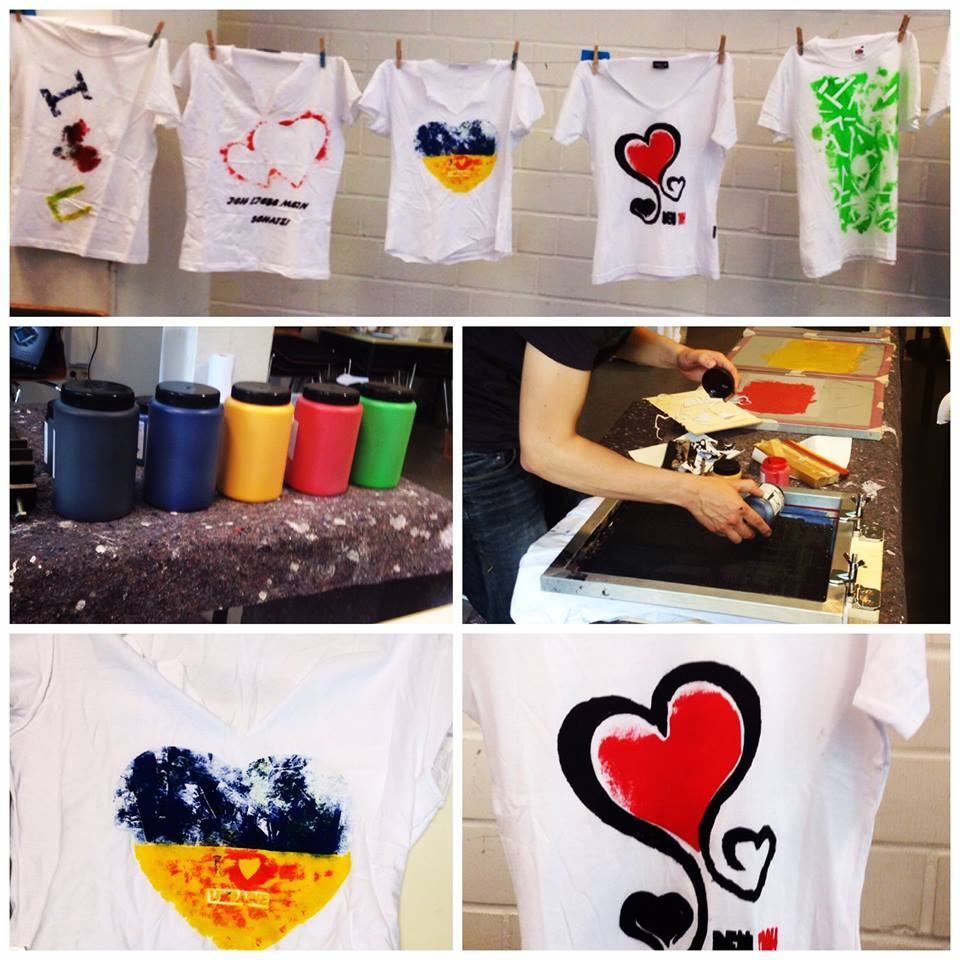
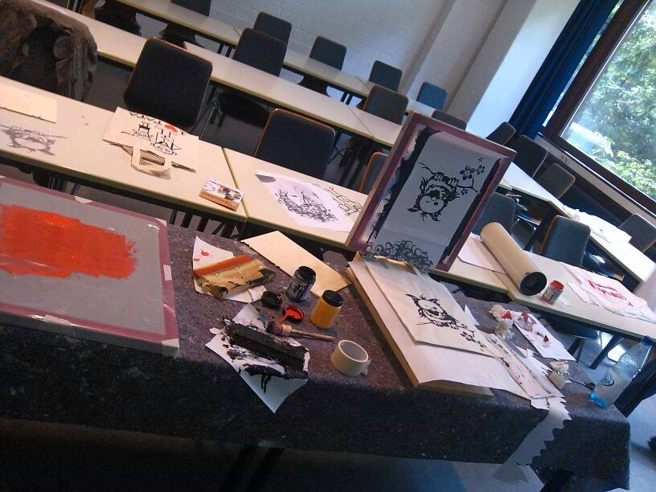

{% block content %}

{% filter markdown|typogrify -%}

Am 21. und 22. Juni fand in der Uni ein Siebdruckworkshop statt. Mithilfe von
vorgedruckten oder vorgemalten Hilfslinien auf Papier wurden Masken
hergestellt. Einige Kursteilnehmer zeigten dabei besondere Fingerfertigkeiten
beim Ausschneiden, andere hatten die Nacht durchgemacht und versuchten sich an
zuvor in der Bibliothek ausgedruckten Motiven. Mit Pinsel oder Rakel wurde
dann die Farbe erst durch das Sieb und dann durch die Löcher im Papier auf das
T-Shirt gedruckt. Eine im Space hergestellte Siebdruckmachine sorgte für die
nötige Fixierung der Siebe. Trotz nahender Fußball-WM wurden vor allem Geschenke
für Freunde oder zum eigenen Stil passende Motive gedruckt.



Finanziert wurde der Workshop vom AstA der Carl von Ossietzky Universität
Oldenburg, im Wintersemester 14/15 soll eine Wiederholung stattfinden.



{%- endfilter %}

{% endblock content %}
